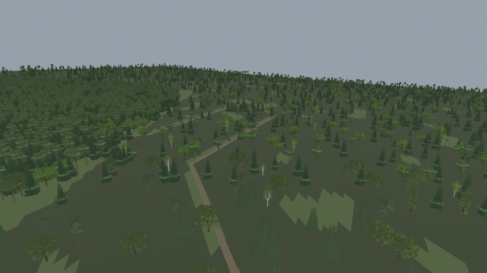
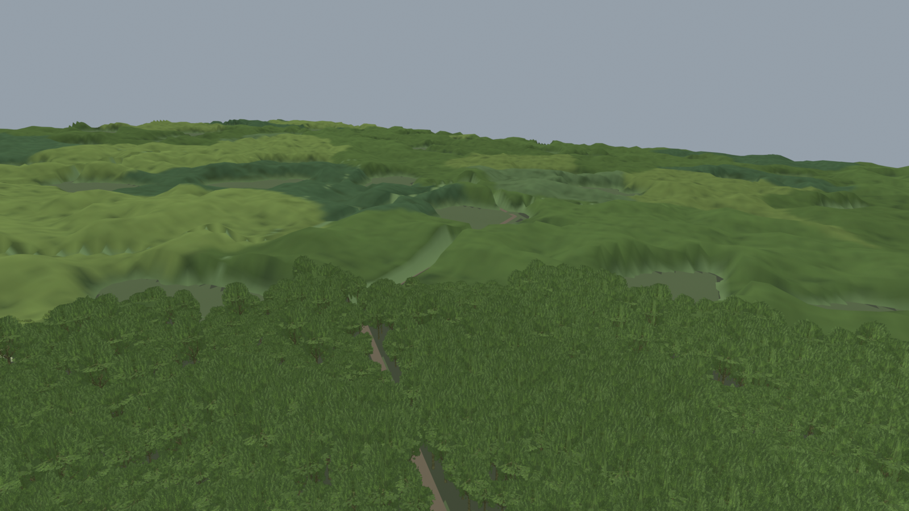
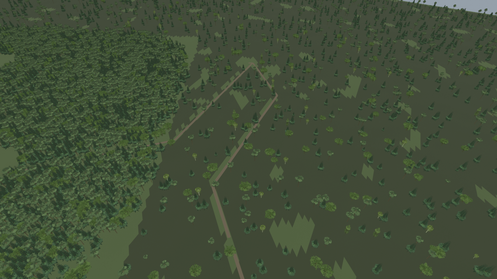
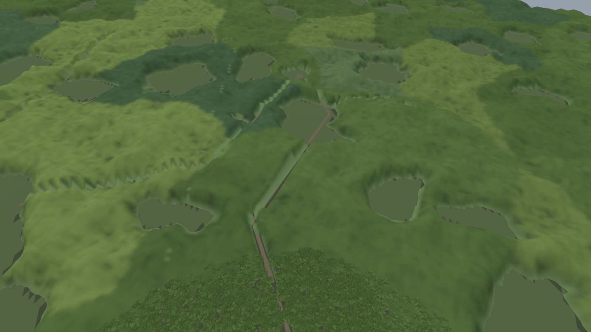
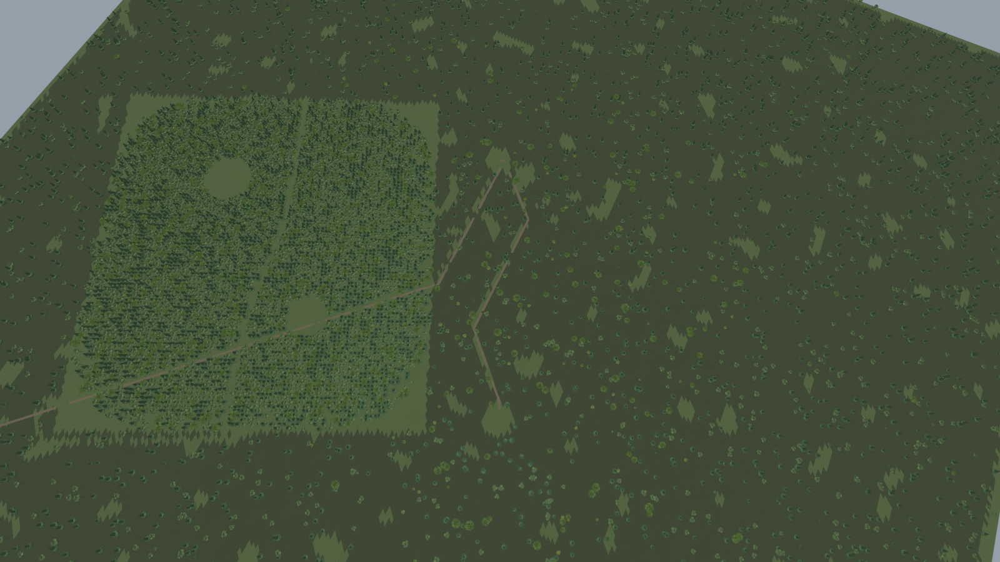
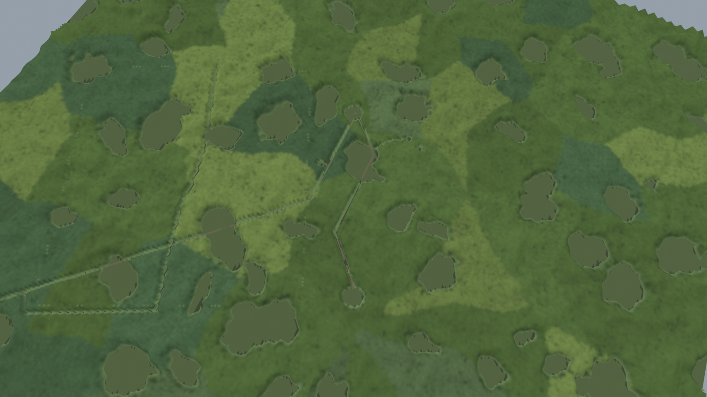
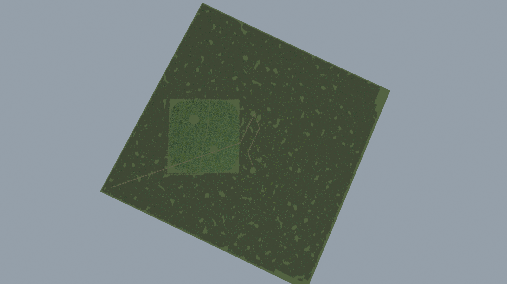
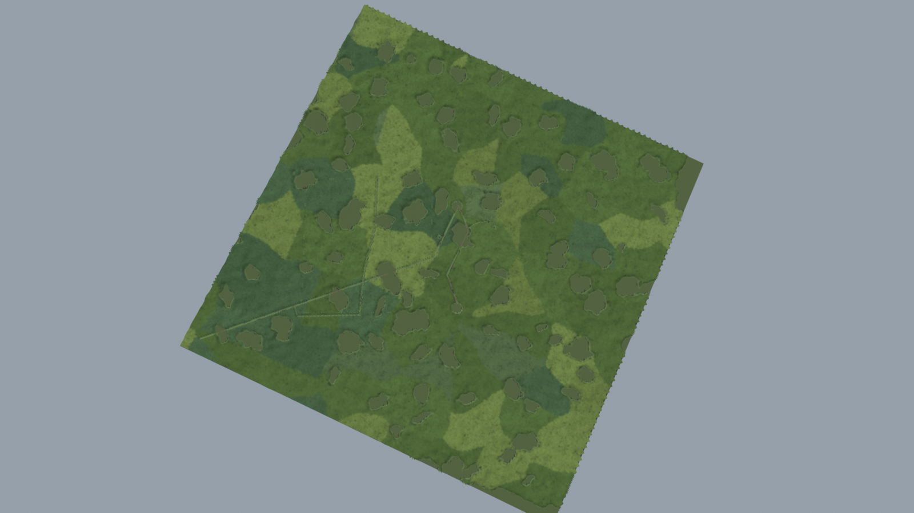

Matched Blender structural reviews at 1600×900, using production placements, canopy geometry and repository tree assets. These are not Unity/HDRP screenshots, a reconstruction of the exact hd139 frame, or evidence of GPU timing and smooth transitions. The scene is cropped to the 2 km sector. See the handoff and required Canopy integration patch.
Baseline: 11,500 planted tree objects. Candidate: 108,777 logical stems, shared glades/species recipe and instanced camera tiers. The coarse intermediate canopy surface and glade rims need native visual review.







